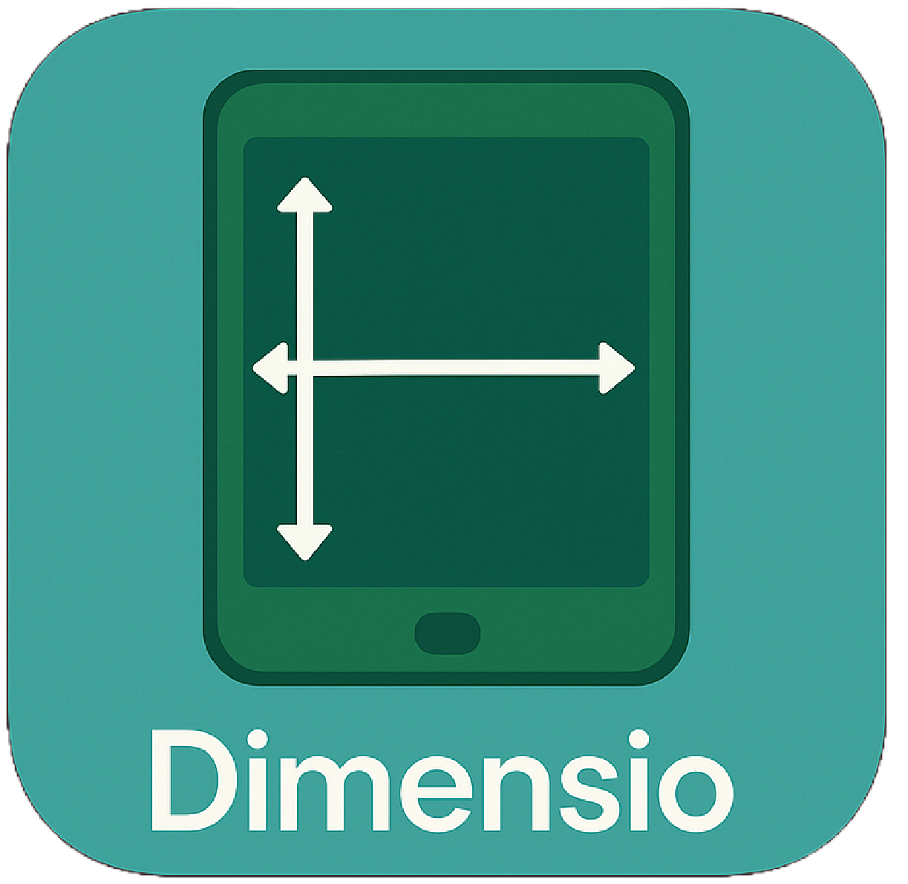

<ion-content [fullscreen]="true">
  <div
    style="
      position: absolute;
      top: 50%;
      left: 50%;
      transform: translate(-50%, -50%);
      display: flex;
      justify-content: center;
      align-items: center;
      width: 100%;
      flex-direction: column;
    "
  >
    
    <ion-button (click)="getDimensions()" class="default-btn" style="width: 70%;"
      >Get Screen Dimesions</ion-button
    >
  </div>

  <ion-modal id="result-modal" #resultModal>
    <ng-template>
      <div class="d-flex-column d-flex-align-all-center">
        <h5>Your screen dimesions:</h5>
        <h1 class="measurement-value">{{ width }}</h1>
        <span style="color: #8e8e8e">Width</span>
        <h1 class="measurement-value">{{ height }}</h1>
        <span style="margin-bottom: 20px; color: #8e8e8e">Height</span>
      </div>
    </ng-template>
  </ion-modal>

  <ion-loading></ion-loading>
</ion-content>
